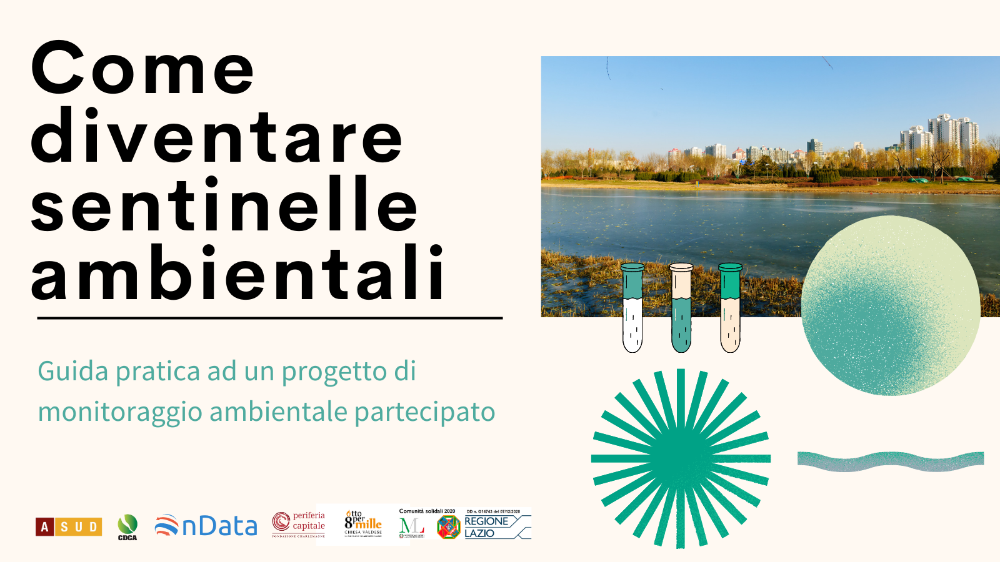

Come diventare sentinelle ambientali

Perché un vademecum e qual è il suo scopo
Negli ultimi anni, come A Sud, abbiamo intrapreso un nuovo percorso per ottenere giustizia ambientale: avviare percorsi di monitoraggio ambientale partecipati, immaginati e ideati insieme alle realtà attive sui territori. Si tratta di un ulteriore step che l’associazione ha messo in campo, dopo anni di lavoro svolto fianco a fianco dei comitati locali. Ascoltate le dinamiche che più di frequente si ripetono nei casi di conflitti ambientali, e tenuto conto delle istanze che il più delle volte i comitati locali avanzano, abbiamo compreso quanto sia importante facilitare i comitati nell’acquisizione di dati indipendenti sulla qualità delle matrici ambientali come acqua, aria e suolo.
Molto spesso le informazioni ambientali diffuse dalle istituzioni pubbliche non si trovano. Quando i dati vengono pubblicati, spesso sono disorganizzati, non aggiornati o poco fruibili dai cittadini, leggibili solo dagli addetti ai lavori. In alcuni casi addirittura sono prodotti e finanziati dagli stessi attori che per anni hanno avuto un impatto negativo sull’ambiente dei territori, negando in questo modo il principio di imparzialità e alimentando un certa diffidenza da parte degli abitanti sulla veridicità dei dati. In un clima di questo tipo, è chiaro che l’accessibilità ai dati ambientali pubblici nonché l’attivazione di un percorso di monitoraggio ambientale indipendente sono due strade che permettono alle realtà locali e ai comitati di essere consapevoli delle ingiustizie ambientali (e sociali) presenti e dei rischi cui sono esposti. Conoscere la qualità dei corsi d’acqua della propria città, lo stato di contaminazione dei suoli o la qualità dell’aria che ogni giorno respiriamo, non dovrebbe essere un lusso riservato a pochi. Si tratta di informazioni di base che tutte e tutti dovremmo essere in grado di reperire. Proprio per questa ragione, per spiegare cosa sono i monitoraggi, come andrebbero fatti, e per comprendere quali sono le informazioni ambientali che dovrebbero essere di facile reperimento da parte di tutte e tutti, si è scelto di pubblicare questo vademecum.
In prima battuta verranno riportate le metodologie per monitorare la qualità dell’acqua dei corsi d’acqua dolce e della qualità dell’aria. Verranno illustrati i diversi protocolli che sono stati siglati in questi anni con istituti di ricerca e con docenti universitari per il monitoraggio di acqua e aria e verranno illustrati casi specifici di monitoraggio. L’auspicio è che da una parte tali percorsi possano essere replicati in altri territori con caratteristiche simile, dall’altra che tali protocolli possano essere presi da esempio per l’articolazione di monitoraggi pilota per altre aree caratterizzate da altre problematiche ambientali.
In seconda battuta, verranno illustrate quali sono le informazioni ambientali che dovrebbero essere periodicamente pubblicate dalle istituzioni e quali sono le pratiche da mettere in campo in caso gli enti pubblici non rispettassero tali doveri.
Verranno poi illustrati casi di monitoraggio ambientale virtuosi che a diverse latitudini hanno visto la partecipazione e l’attivazione di cittadine e cittadini. In alcuni casi, la sinergia tra istituzioni pubbliche e cittadinanza ha permesso di avviare un nuovo modo di fare politica sui territori: prendersi cura insieme dei beni comuni, prevedendo un protagonismo attivo della cittadinanza e una collaborazione proficua con gli enti preposti e con le istituzioni locali.
In conclusione verranno esaminate le informazioni sui dati ambientali.
Dove dovrebbero essere pubblicati i dati ambientali? In che formato? Con che frequenza? Si tratta di regole valide su tutto il territorio nazionale o cambiano a seconda della regione o del comune di riferimento? Se le istituzioni non pubblicano i dati, come possiamo richiederli? Occorre un interesse diretto per poter accedere alle informazioni ambientali oppure basta essere solo un cittadino curioso? Come possiamo procedere per chiedere tali informazioni? Proveremo, grazie alla collaborazione dell’associazione Ondata, che da anni promuove l’apertura dei dati pubblici per renderli un bene comune per tutte e tutti, a rispondere a questi interrogativi al fine di facilitare l’azione di lotta che quotidianamente cittadini, comitati e associazioni portano avanti per chiedere giustizia ambientale sui propri territori.
In caso volessi segnalarci delle precisazioni, proporci degli aggiornamenti e condividerci idee su questo documento, scrivi a .
Crediti
Il presente vademecum è stato realizzato dalle associazioni A Sud e onData. Si ringraziano: Maura Peca, Andrea Borruso, Lorenzo Perone, Chiara Segalla, e Sara Vegni per i contributi elaborati all’interno del report e Bruna Gumiero per la revisione scientifica.
La guida è stata realizzata all’interno del progetto RomaUP finanziato dalla Fondazione Charlemagne tramite il programma periferiacapitale, l’8x1000 della Chiesa Valdese, e Comunità Solidali della Regione Lazio.
È pubblicato con licenza Creative Commons Attribuzione 4.0 Internazionale (CC BY 4.0).